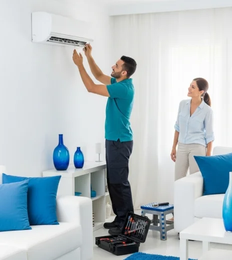

الـ تكييف بقى مش رفاهية، ده ضرورة في بيوتنا ومكاتبنا خصوصاً في الحر الشديد. وأي عطل فيه بيأثر على راحتنا اليومية. علشان كده، خدمات صيانة تكييفات بقت أساسية. مركزنا بيوفيرلك خبرة كبيرة في تصليح تكييفات وبيقدم لك دعم كامل من خلال أفضل مركز صيانة تكييفات في مصر. اتصل بينا على 19580 وهتلاقي الخدمة اللي بتدور عليها.
حجز موعد صيانة الان
كتير من الناس بيشتكوا إن التكييف مش بيبرد زي الأول، هنا محتاج صيانة تكييف أو اصلاح تكييفات شامل.
لو لقيت ميه بتنزل من التكييف، ده عطل محتاج خدمة تصليح تكييف بشكل سريع.
ممكن التكييف يقف فجأة عن الشغل، الحالة دي لازم تتصل بخدمة اصلاح تكييفات فوراً.
إحنا في مركز صيانة تكييفات بنوفرلك:
كلمنا على 19580 وخلي جهازك يرجع المكان زي زمان.
التزام باستخدام قطع غيار أصلية في أي تصليح تكييف أو اصلاح تكييفات.
خدمة عملاء متاحة طول اليوم لاستقبال طلبات صيانة تكييف.
فريق معتمد ومتخصص في تصليح تكييفات بدقة عالية.
خبرة طويلة في صيانة تكييفات لجميع الموديلات.
مع كل صيانة تكييف أو اصلاح تكييف، بنقدمملك ضمان مكتوب يطمنك. وكمان، كل القطع اللي بنستخدمها أصلية 100% علشان التكييف يشتغل بكفاءة بعد الاصلاح.